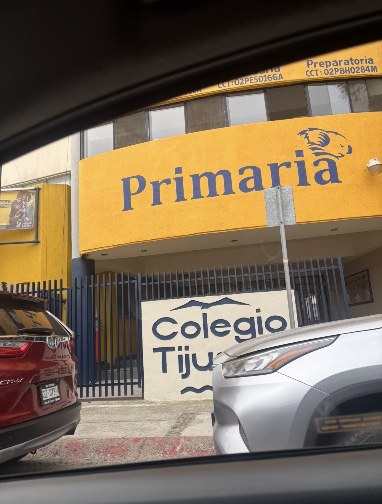
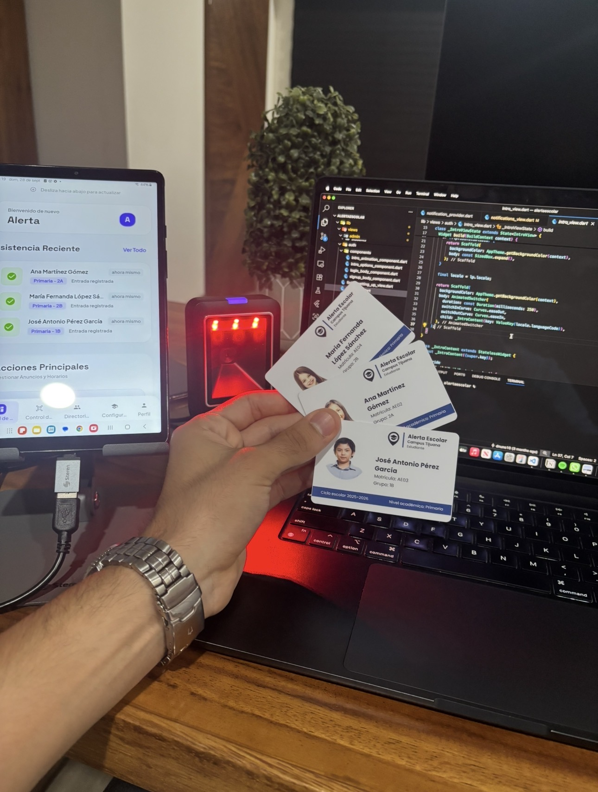
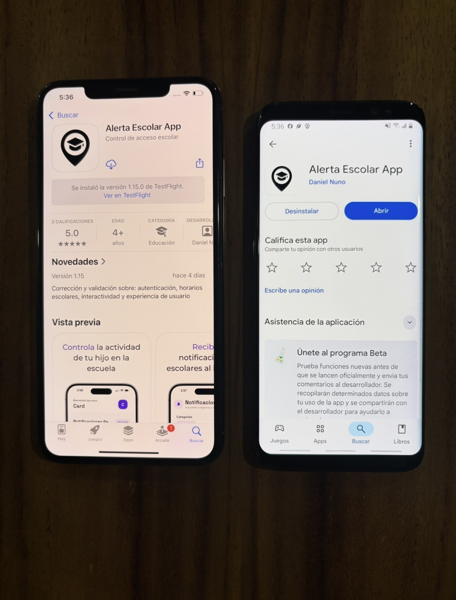

Identifying the problem
Alerta Escolar started by understanding a clear operational problem: a school needed a simple and affordable way to know when students entered and left campus. That initial diagnosis shaped the entire project and its focus on practical impact over unnecessary complexity.

Designing the solution
Before writing code, I mapped the workflow, requirements, and system behavior needed for a school environment. The solution had to be easy for administrators to operate, intuitive for students, and reliable enough for families to trust the notifications they would receive.
Building the platform
I built the platform around mobile access, QR-based validation, and a workflow that connected students, parents, and school staff. This was where product thinking and engineering execution came together under real constraints.

Testing with real users
Validation happened in a real school context, which made testing much more meaningful than a simulated environment. Using actual QR credentials and real workflows helped uncover practical issues early and improved usability before full deployment.

School-wide deployment
Once the solution was stable, it was deployed at scale across the school. That phase required coordination, support, and adaptation to how the institution actually operated day to day, turning the project from software into a working service.

Impacting 1,200+ students and families
The final result was a platform that served more than 1,200 students and reached over 2,000 total users including families and staff. It demonstrated how software can create measurable social impact when it is designed around a concrete and urgent need.